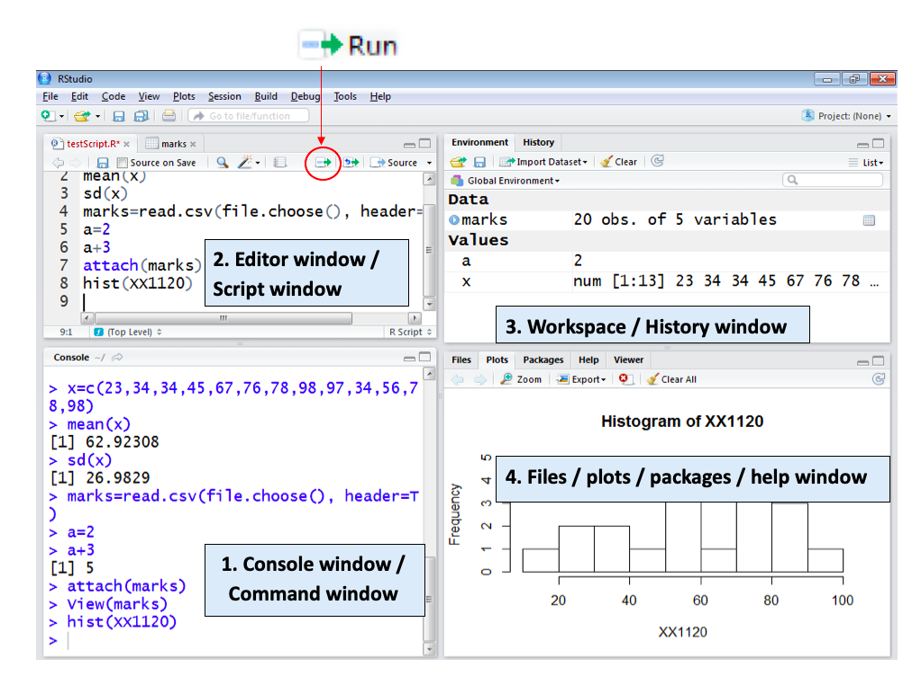
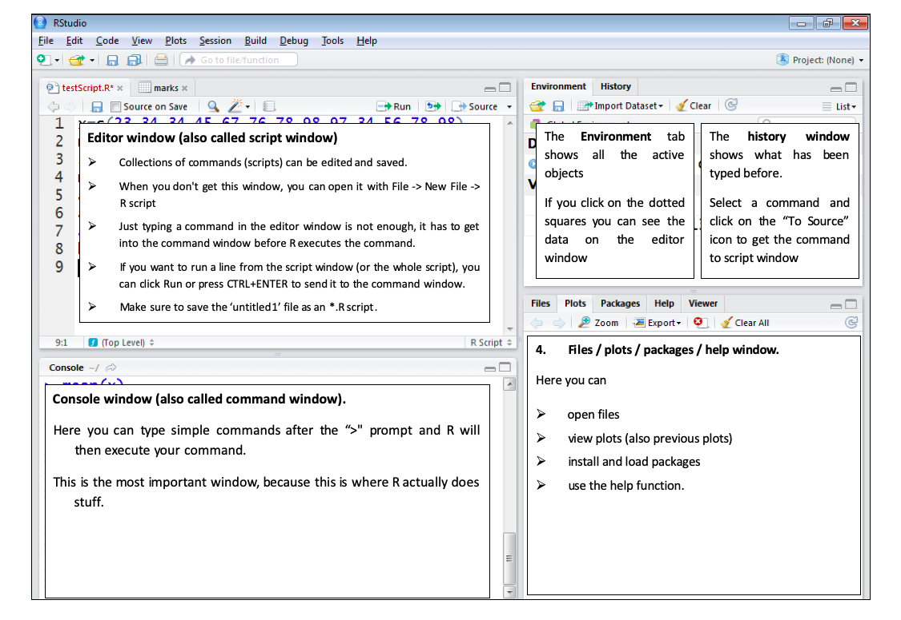

Fundamentals of Mathematics and Statistics with R
2020-12-12
Chapter 1 Introduction to R
1.1 Installing R
Step 1: First download R freely from the Comprehensive R Archive Network (CRAN) https://cran.r-project.org/. (At the moment of writing, R 4.0.3 is the latest version. Choose the most recent one.)
Step 2: Then install R Studio’s IDE (stands for integrated development environment), a powerful user interface for R from https://rstudio.com/products/rstudio/download/. Get the Open Source Edition of RStudio Desktop. RStudio allows you to run R in a more user-friendly environment.
You need to install both R and Rstudio to use RStudio.
If you have a pre-existing installation of R and/or RStudio, I highly recommend that you re install both and get as current as possible.
Step 3: Then open Rstudio.
1.2 RStudio layout
The RStudio interface consists of four windows (see Figure 1 and 2).
Bottom left: console window (also called command window). This is where you type and run all your R commands
Top left: editor window (also called script window).
Top right: workspace / history window.
Bottom right: Files / plots / packages / help window.


Now you are familiar with the layout. Let’s begin with R basics.
1.3 Installing an R Package
The primary location for obtaining R packages is CRAN
Packages can be installed with the
install.packages()function in RTo install a single package, pass the name of the package to the
install.packages()function as the first argument
The following the code installs the tidyverse package from CRAN
This command downloads the
tidyversepackage from CRAN and installs it on your computerAny packages on which this package depends will also be downloaded and installed
Installing the tidyverse package could take several minutes. You only need to do this once.
1.4 Loading an R Packages
Installing a package does not make it immediately available to you in R; you must load the package
The
library()function is used to load packages into RThe following code is used to load the tidyverse package into R
NOTE: Do not put the package name in quotes!
## ── Attaching packages ─────────────────────────────────────── tidyverse 1.3.0 ──## ✓ ggplot2 3.3.2 ✓ purrr 0.3.4
## ✓ tibble 3.0.4 ✓ dplyr 1.0.2
## ✓ tidyr 1.1.2 ✓ stringr 1.4.0
## ✓ readr 1.4.0 ✓ forcats 0.5.0## ── Conflicts ────────────────────────────────────────── tidyverse_conflicts() ──
## x dplyr::filter() masks stats::filter()
## x dplyr::lag() masks stats::lag()- Some packages produce messages when they are loaded (but some don’t)
1.5 Getting started with R
An Introduction to R: https://cran.r-project.org/doc/manuals/R-intro.pdf